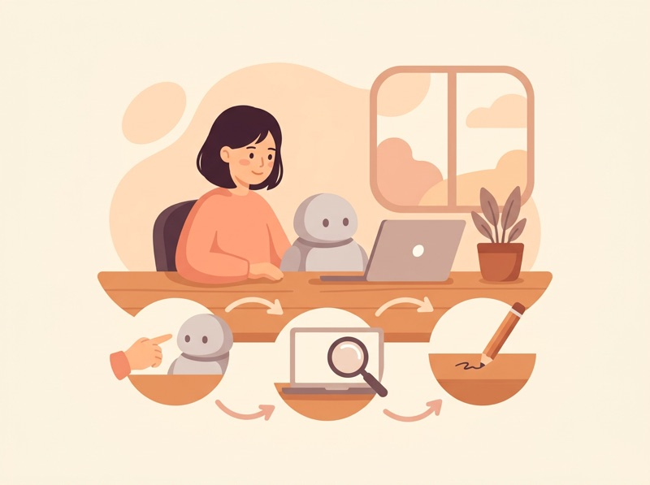
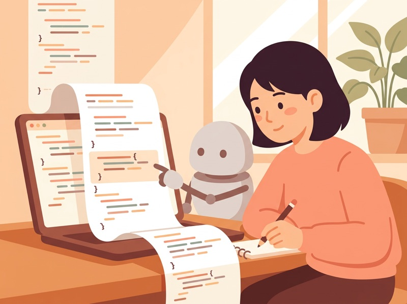
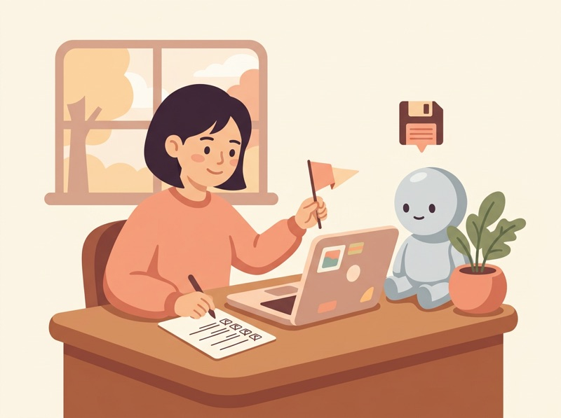

テーマ
第9回の論文の「計画して、確かめるのは人」を受けて、バイブコーディング（ノリで頼む）から、計画して確かめる開発へ、さらにプロンプト（1回の頼み方）から、ループ（頼む→確かめる→直す、をくり返す）へ進む考え方を説明する。そのうえで、進級制作（または個人開発の延長）に小さな改善を1つ実装するワークをする。前回のアンケートで多かった困りごと（AIへの頼み方、コードの理解）も、冒頭で短く扱う。先生が席をまわる
キーワード
プロンプトからループへ / 1周を小さく / 止める条件（できたかの見かた） / 人が見る場所 / 周回数 / コミット・プッシュ
必要な準備
第9回で残した「今日の成果」のメモ（
NOTES.mdか手元のメモ）。進級制作、または続けたい個人開発のリポジトリを開けること。agyが動くCodespacesか、AI Studio。この回のゴール
- バイブコーディングと、計画して確かめる開発（この授業では「AI駆動開発」と呼ぶ）の違いを、1文で言える
- 「プロンプトより、ループ」と言われ始めている背景を、自分の言葉で言える（言葉の定義はまだ決まっていないことも含めて）
- ループを回す前に決める4つ（1周の大きさ・止める条件・人が見る場所・周回数）を、自分の作品で決められる
- AIに小さく・見せて・確かめ方つきで頼め、コードを説明させ、エラーは全文を貼れる
- 小さな改善を、1周〜数周回して実装し、止める条件で確かめて、コミット・プッシュまでできる
今日の優先順位: 大きな改善でなくて構いません。動くところまで、小さく1つが目標です。止まったときは、「どこで止まったか」を書いておけば、次回の出発点になります。
授業の流れ
2コマ連続（90分 + 90分 = 計180分）。途中休憩あり。
1限 前半
約40分
プロンプトから、ループへ。頼み方とコードの理解を短く知る
今日の流れ：ループを知って、小さく回す
① 第9回のつづき：バイブコーディングから、AI駆動開発へ、そしてループへ（約15分。前半の約5分が、この「バイブコーディングから」の話）
ノリで頼む → 計画して確かめる → ループにする
- ノリで頼む気軽に任せると、思わぬ形のものが、山のように出てくることがある（絵の例）
- バイブコーディング: 辞書（Merriam-Webster）の説明では、AIに作りたいものを伝えて、作らせるやり方。"In vibe coding the coder does not need to understand how or why the code works"（作る人は、コードがなぜ動くかを理解しなくてよい）。バグが残ることは受け入れる、ともある。2025年2月のAndrej Karpathy氏のX投稿が出どころと考えられている（辞書の記述。投稿の原文は確かめていません）。辞書は、意味が変わる可能性もある、ごく新しい言葉だとも書いている
- 気軽に試す、使い捨てを作る、には向く。ただし進級制作のように、直し続ける作品では、「なぜ動くか分からない」が、あとで困る。第9回の論文の「プロは雰囲気で任せず、計画して、人が確かめる」が、そこにつながる
- 第9回の論文（Professional Software Developers Don't Vibe, They Control（arXiv））: プロは、雰囲気で全部を任せず、計画して、AIに任せ、人が確かめる。今日は、その1回の流れを、くり返す話
- 2026年6月ごろから、「プロンプトより、ループ」と言われ始めている。OpenClawという開発ツールの作者が、X上で "Stop prompting coding agents. You should be designing loops that prompt your agents."（コーディングエージェントに、プロンプトを打つのをやめよう。エージェントにプロンプトを打つループを設計しよう）と書いた、と解説記事が紹介している。この考え方は、ループエンジニアリングとも呼ばれ始めた
- 人が1回ずつ指示を書く代わりに、「実行→確認→直す」をくり返す仕組みを作る。解説記事の一つは、「完成条件」「検証」「再試行」「停止」（と引き継ぎ）を設計する考え方として使える、としている（SmartScope）
- 注意: この言葉は最近使われ始めたばかりで、定義は決まっていません。ここで紹介したのは、解説記事で、公式の定義ではなく、元の投稿や原文は確かめていません
- 「プロンプトが要らなくなる」わけではありません。解説記事にも、悪い指示や悪い文脈でループを回すと、速く、高くつく失敗をするだけ、よいループは、よい指示と文脈の上に作る、とある（要約。ZBrain）。今日の「頼み方」の練習は、そのまま、ループの土台
- 「ほとんどの開発者には、まだ要らない」という意見もある（費用と安全の理由。AlphaSignal）。記事が言う「ループ」は、AIが自動で回し続けるもので、その使い方は今日はしません。今日は、人が回す小さなループで練習する
プロンプトから、ループへ：頼む→確かめる→直す、をくり返す

くり返す頼む → 確かめる → 直す、を、小さく何度か回す
ループを回す前に決める4つ
② アンケートから：1周の頼み方（約10分）
前回のアンケートで、困っていたこと（22件）
- 多かった上の2つ（頼み方、コードの理解）を、冒頭で短く扱う。作品づくりの技術（データベース・Git・サーバー・AIの組み込みなど）は、ワークの時間に先生を呼んでください
AIへの頼み方：小さく・見せて・確かめ方を渡す
- 小さく: 「ログイン機能を全部作って」ではなく、「入力欄を1つ足して」。1周で頼むのは、1つだけ
- 見せて: 「いい感じに」ではなく、「ボタンを押すと、リストの下に1行増える」のように、見て分かる形で書く
- 確かめ方を渡す: 「できたら、〇〇が画面に出るはずです。その確かめ方も書いてください」と、頼む文に入れる（止める条件になる）
- 思い通りに出なかったら、頼み直す前に、「何が違ったか」を一言で書いてから頼む（これが2周目の頼み方）
③ アンケートから：コードの理解（人が見る場所）（約10分）
AIが書いたコードを、理解する・直す

読んで、聞く分からない所は、AIに説明させて、自分の言葉にする
- 説明させる: 分からないコードは、そのまま使わずに、「このコードが何をしているか、初心者向けに、順番に説明してください」と頼む。説明を読んで、自分の言葉で一言にしてみる
- 変えた所を聞く: 直してもらったあとは、「どこを、なぜ変えましたか」と聞く。変えた理由が分かれば、次に自分で直せる
- エラーは全文を貼る: エラーの文を、途中で切らずに全部と、直前にしたことを一緒に伝える。APIキー・
.envの中身・個人情報が入っていないかは、貼る前に確かめる - ループを速く回すほど、コードを読まないまま増える危険がある（解説記事では「理解の負債」と呼ばれている。ZBrain）。AIの説明や直し方はいつも正しいとは限りません。動かして確かめるのは、人です
④ 前回のメモから、今日の1周を決める（約5分）
- 第9回で残した「今日の成果」のメモの次にやることから、今日の小さな改善を1つ選ぶ（大きいときは、半分に割る）。メモがない人は、作品を開いて、「次に直したい所」を1つ決める
- 上の4つ（1周の大きさ・止める条件・人が見る場所・周回数）を、一言ずつメモする
1限 後半
約50分
ワーク①：ループを回して、小さな改善を実装する
① 1周目の頼む文を作る（約10分）
- 今日の改善を、小さく・見せて・確かめ方つきの頼む文にして、メモする。例:
この作品に「（足すこと）」を1つ足したい。（やらないこと）は変えないでください。できたら、（画面でこう見える）はずです。その確かめ方も書いてください。 - 先に計画だけ出させたい人は、第9回の「困ったときの道具」（AIに「計画だけ」出させる）を使ってよい
1周目の頼む文：4つの文を、つなぐ
② ワーク（約40分）
- AIエージェント（agyまたはAI Studio Build mode）に頼んで、1周ずつ回す。頼む→人が確かめる→直す。出てきたものは、止める条件で見る
- 周回ログは、1周ごとに一行（下の図）。困ったときの頼り先も、下の図の順です
周回ログ：1周ごとに、一行
NOTES.mdか手元のメモです。困ったときの頼り先
休憩
10分
2限 前半
約50分
ワーク②：止める条件で確かめ、必要なら次の周を回す
① ワーク（約40分）
- 1限のつづきを進める。先生が席をまわるので、困りごとはその場で聞く
- コードが分からなくなったら、「説明させる」「変えた所を聞く」を使う。エラーが出たら、「全文を貼る」。周回数は最大3周（3周して止まらなければ、先生へ）
進級制作のリポジトリを、AI Studioに直接取り込まない。取り込むと、AI Studio向けに書き直されたコピーができ、GitHubへ送り返す（Force push）と、mainがその形に置き換わります（第7回）。AI Studioで試したいときは、コピー（別のリポジトリ）を取って、そのコピーを使います。進級制作の中身を変えるときは、agyで、元のリポジトリのブランチ上で行うのが安全です。
② 止める条件で確かめる（約10分）

止めて、残す確かめ方に合ったら止めて、コミットで残す
止める条件で確かめる：止めるか、次の周へ
- 頼む文に書いた「できたかの見かた」で、実際に動かして、画面で確かめる。できていれば、止める（もう1周しない）。AIが「できた」と言っても、確かめるのは人
- 確かめた結果を、周回ログに一行（動いた／ここが違った）
2限 後半
約30分
ワーク③と、コミット・プッシュで残す
動いた分を、残す：コミット→プッシュ
- ワーク（約20分）: つづきを進める。区切りのいいところで手を止める
- コミット・プッシュ（約10分）: 動いた分を、コミットして、プッシュする。コミットのメッセージは、「何を足したか」を一言で書く。やり方が分からない人や、チームでGitの共有に困っている人は、先生へ
- 次回の準備を確かめる: 作品の場所を、次回も開けるか。agyが動くか。動かない人は今のうちに先生へ
動かなくても大丈夫。動かなかった分は、「どこで止まったか」を周回ログに書いて残せば、次回はそこから始められます。
まとめ
約10分
今日回したループを振り返り、次回を知る
今日の一言メモ（3つ）
- 先生のひとこと（約3分）: 今日のワークで出た困りごとを、次回にどう扱うか
- 一言メモ（約4分）: 今日何周回したか、どこで止めたか。AIに任せたことと、自分で確かめたことを、一言ずつ
- 次回（第11回、約1分）：進級制作に小さな改善を加える②——第10回の続き。改善を積み重ね（ループを何度も回し）、動作確認とコミット・プッシュまで行う（授業計画一覧）
- 周回ログと成果のメモが残っているか、最後に確かめて退出（約2分）
課題・次回までにやること
必須
今日の周回ログと成果、次にやることを、メモに残しておく
何周回したか、動いたところ、止まったところ、次にやること。リポジトリのNOTES.mdか、手元のメモでよい。次回の最初に開きます。
推奨
動いた様子を、画面のスクリーンショット1枚で残す
次回の「変える前」と「変えた後」を見比べるために使います。個人情報・APIキー・.envの中身が映らないようにします。
参考リンク
「ループエンジニアリング」は最近使われ始めた言葉で、定義は決まっていません。次の4つは解説記事で、公式の定義ではありません（確認日 2026-11-12）。
- Loop Engineering: Stop Prompting Agents（Eric Roby） — 「プロンプトを打つのをやめ、ループを設計する」という投稿の紹介（2026年6月）
- Loop engineering: The foundation for building self-driving AI agents（ZBrain） — 悪い指示のループは速く失敗する、理解の負債
- Most Developers Do Not Need Agent Loops Yet（AlphaSignal） — まだ要らない人が多い、という意見（費用と安全）
- Loop Engineering：agentの完成条件・検査・停止を設計する（SmartScope） — 完成条件・検証・再試行・停止
- Professional Software Developers Don't Vibe, They Control: AI Agent Use for Coding in 2025（arXiv） — 第9回の論文（2025-12-16投稿、改訂版v2は2026-08-18、確認日 2026-11-19）。「計画して、確かめるのは人」は、この論文の趣旨をこの授業でまとめた言い方で、論文の文そのものではありません
- VIBE CODING Slang Meaning（Merriam-Webster） — バイブコーディングの意味と、出どころの説明（確認日 2026-11-19）
- 第9回 進級制作とAIエージェントをつなげよう（本サイト） — 論文の話、次の一歩のメモ、AIに「計画だけ」出させる、困ったときの道具
- 第7回 Google AI Studio Build modeで仕上げよう②（本サイト） — 進級制作を直接取り込まない理由、コピーの取り方